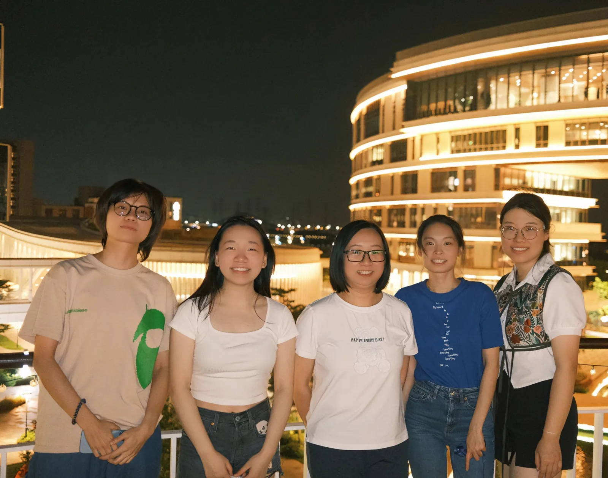
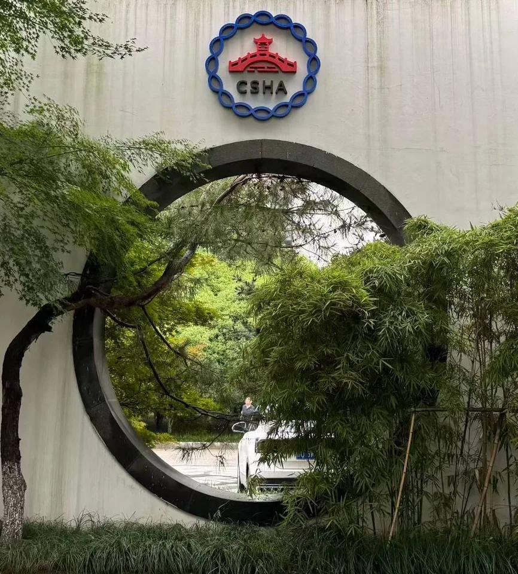
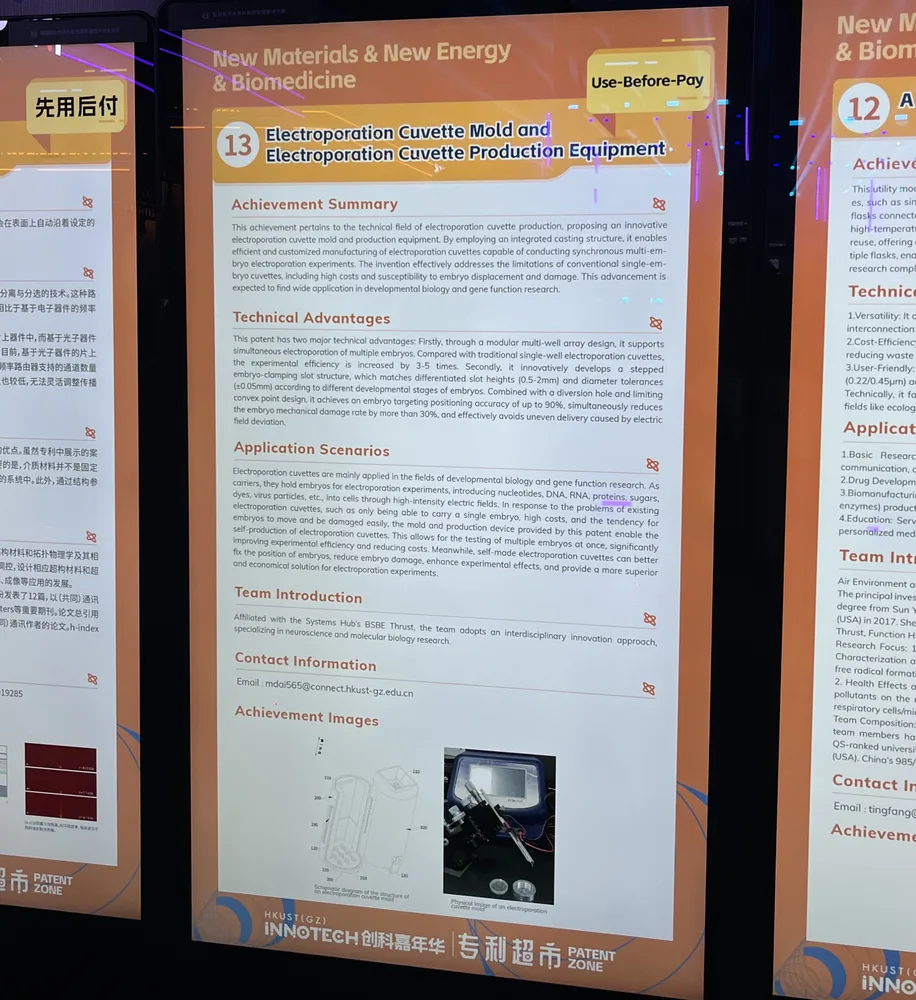
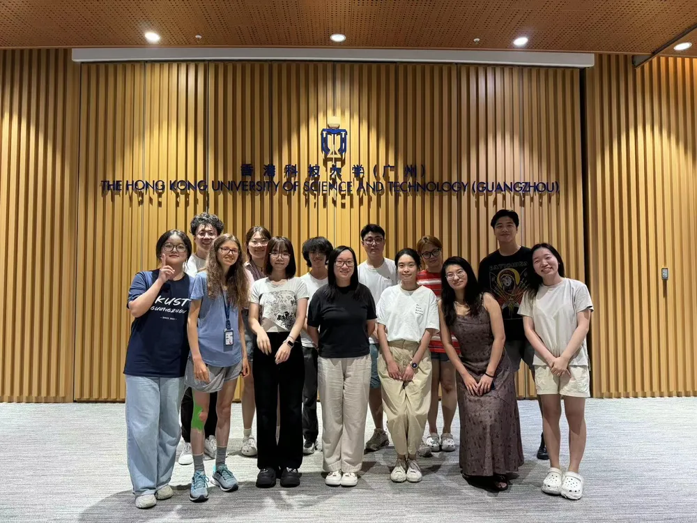
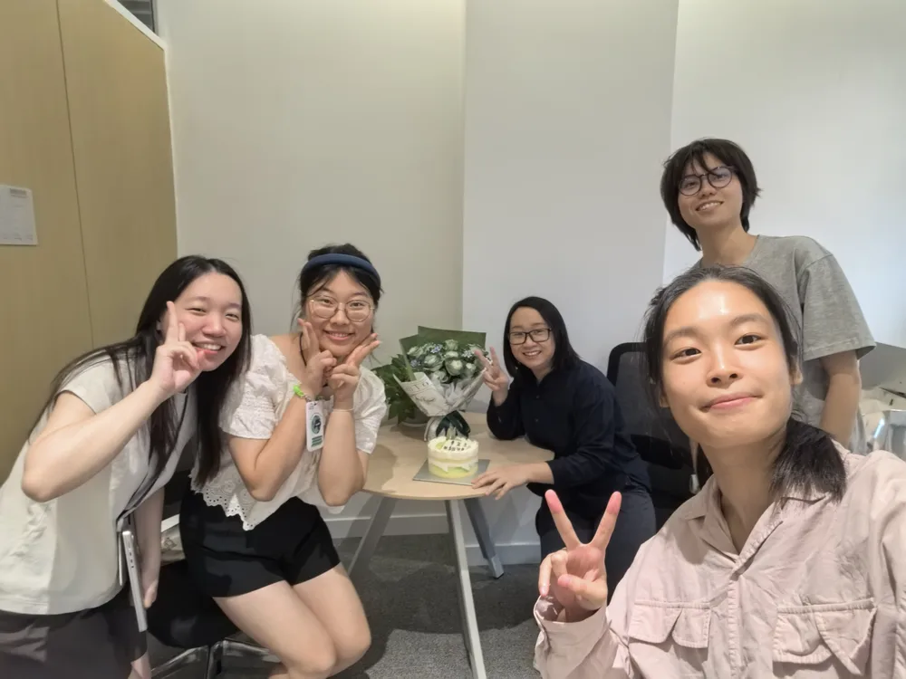
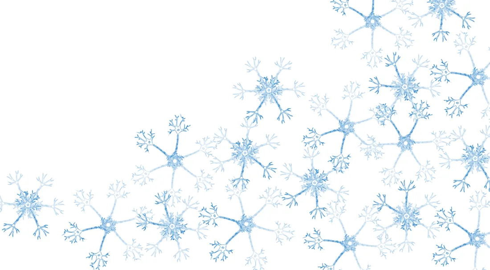
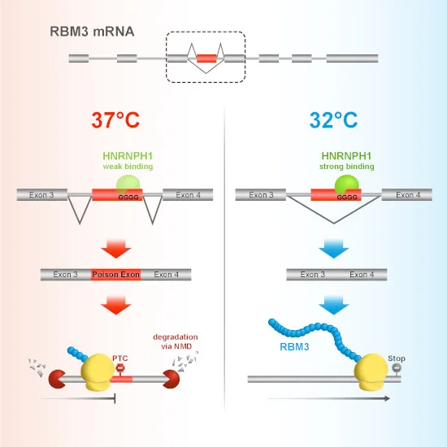
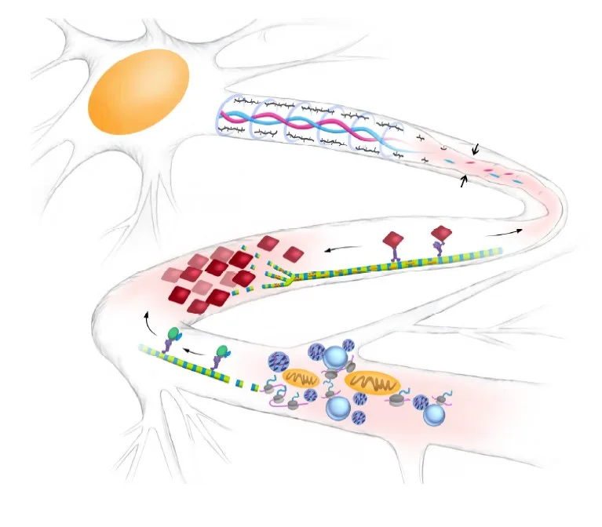
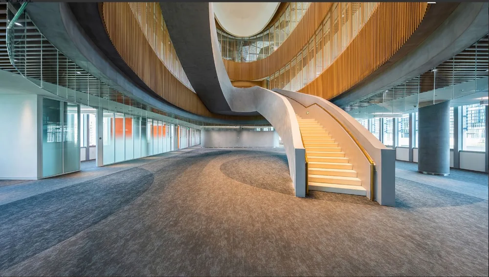

Recent news
Celebrating the Publication of PI Julie's Translated Book: A BRIEF HISTORY OF INTELLIGENCE!
We are thrilled to congratulate Julie, on the publication of her newly translated book! This achievement reflects her dedication to advancing scientific knowledge and making cutting-edge research accessible to a chinese audience. The entire lab celebrates this milestone and takes pride in her leadership and scholarly contributions.

Conference Talk
Shuhan presents research on Hypothermia-Mediated RNA Editing at CSHA Conference: The now and future of RNA Therapeutics

Menglin's Patent Presentation at HKUST(GZ) INNOtech!
Electroporation Cuvette Mold and Electroporation Cuvette Production Equipment
Sparking Inspiration at the School Opening Ceremony
Our lab member Ann Cloos gave a brilliant talk at the school opening ceremony, shared her compelling journey to China and her reasons for choosing our university, highlighting the unique opportunities and collaborative spirit that drew her here.

Say Hi to Our New Lab Mates!
Exciting news! We've welcomed some new faces to our lab team. Take a moment to visit our website, learn more about them, and help us give them a warm welcome.
Lab Team’s Delightful Dim Sum Day Out!

New Lab Members Unite for Teacher's Day Celebration!

Open Targets News on the RBM3 Paper
From hibernation to neurodegeneration: how a cold-resistance protein is paving the way to dementia treatments
Continue Reading
Congrat on the Newly Published Paper on EMBO Jounral!
We show that HNRNPH1 mediates RBM3 cold-dependent exon skipping via its thermosensitive interaction with a G-rich motif within the poison exon. Our study provides novel mechanistic insights into the regulation of RBM3 and provides further targets for neuroprotective therapeutic strategies.
Continue Reading
Congrat on the Julie's Newly Published Review Paper on Local Protein Synthesis!
In this review, we examine the link between local protein synthesis and key axonal processes, and the implicated pathophysiological consequences of dysregulated local protein synthesis.
Continue Reading
Hello World!
The Opening of Lin Lab Website
Hello HKUST (GZ)!
The Opening of Lin Lab in HKUST (GZ)!